يوم IEEE والمؤتمر الهندسي
القيادة والابتكار في الهندسة
"Telecommunications Session"
المحاضرة الأولي للمهندس محمد سعيد مع الفرع الطالبي للـــ IEEE بالمعهد - SB NDETI IEEE
المهندس محمد سعيد هو مهندس مصري متخصص في مجال الاتصالات وتكنولوجيا المعلومات، يمتلك خبرة واسعة في مجال الاتصالات والشبكات، حيث عمل في عدة شركات كبيرة في مصر وخارجها. قام المهندس محمد بتصميم وتنفيذ العديد من مشاريع الاتصالات الحديثة والمتقدمة، وقاد فرق عمل متخصصة في تطوير وصيانة شبكات الاتصالات. كما لديه مهارات قيادية تساعده على تحقيق الأهداف وتحسين أداء الفرق التي يعمل معها. ويعتبر المهندس محمد سعيد محترفا متميزاً في مجال الاتصالات، ويسعى دائماً لتطوير نفسه ومهاراته من خلال حضور الدورات التدريبية ومتابعة أحدث التقنيات في هجل الاتصالات وتكنولوجيا المعلومات. المهندس محمد سعيد لديه خبرة تزيد عن 10 سنوات في مجال الاتصالات وتكنولوجيا المعلومات، حيث عمل في عدة شركات كبيرة في مصر وخارجها، من بينها :
- شركة اتصالت مصر - (TE Data) مصر
- شركة فودافون - مصر
- شركة اتصالات الإمارات - (Etisalat) الإمارات العربيه المتحده
- شركة الاتصالات السعوديه - (STC) المملكه العربيه السعوديه
وقد عمل المهندس محمد في هذه الشركات بمختلف الأدوار والمسؤوليات، مما جعله يكتسب خبرة غنية واسعة في مجال الاتصالات وتكنولوجيا المعلومات.
" Telecommunications in Session Guid Courses "
المحاضرة الثانية للمهندس محمد سعيد مع الفرع الطالبي للـــ IEEE بالمعهد - SB NDETI IEEE
محاور المحاضرة:-
- نبذة عن كل مجال
- و فرص العمل و الرواتب
- الشركات المختصه لكل مجال
- نبذة عملية بالصور
- المهارات المطلوبة
- الاستفسارات
تم التوصل إلى اتفاق مع المهندس محمد سعيد لتقديم تخفيض على الدورات التدريبية التي يقدمها فقط لطالب المعهد العالي للهندسة والتكنولوجيا في دمياط الجديدة.
الدورات التدريبية المتاحة:-
- Microwave Transmission.
- Optical Transmission.
- IP Transmission.
- HCIP Transmission V2.5.
Microwave Transmission Contents
- Microwave theory, frequency ranges, bandwidth, duplex types, traffic types
- signal flow and link types and difference
- Links types, structure, and features
- PDH in deep
- SDH I Deep
- MIMO, XPIC, N+1, FD, SD, HSB in details
- AM, ATPC, LAG, e band, SDB technologies in deep HW description and features
- microwave link configuration & commissioning procedure for radio link on software Huawei U2000
- troubleshooting sequence and main alarm maintenance, alarm cause and severity types , and troubleshooting sequence
Optical Transmission Contents
- optical fiber as a Transmission line
- Fiber Types, losses, connectors, SFPs
- PDH in details
- SDH in details
- DWDM site types, node types, interfaces, functions of elements, NE operation, Traffic flow inside the network OTN protocol details
- signal flow and Service processing scenario HardWare description and features for Optical equipment in detail
- optical link configuration procedure on software
- troubleshooting sequence and main alarm maintenance instructions
- protection details types
- new optical technologies GMPLS, CDCF
IP Transmission Contents
- Routing and switching basic review
- Transmission network overview (microwave and optical )
- OSPf , VPN , RSVP , MpLS , PWE3 , BGP
- Traffic engineering
HCIP Transmission v2.5
- 32video , 20lecture , 11chapter , 840page , Lab guide
- WDM technology
- Transmission products
- NG WDM equipment and application
- Optical and electrical layer grooming
- NG WDM device commissioning, configuration
- MS-OTN technology
- OTN protocol
- protection technologies
- routine NG WDM device maintenance
- NG WDM alarm signal flow analysis
- NG WDM system troubleshooting
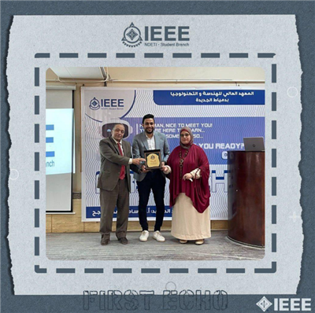
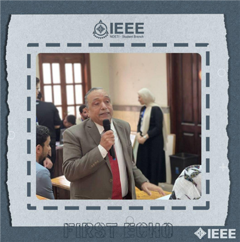
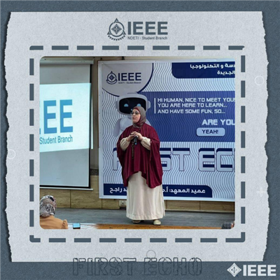
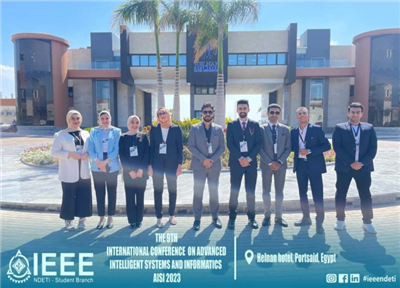
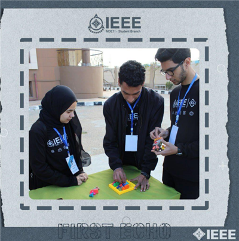
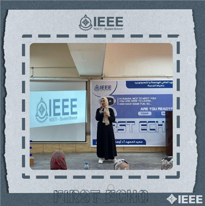
" جولات تيكني – 2024 Techne Drifts "
جولات تيكني هي سلسلة فعاليات في محافظات مصر لتقوية و تمكين رواد الأعمال. و هي حدث ليوم واحد على مدار السنة في مدن مصر، حيث تهدف لتقوية و تمكين رواد الأعمال في مجتمع الشركات الناشئة و تكون على هيئة حملة ترويجية تجوب محافظات مصر.
بعض المتحدثين في جولة تيكني في الدلتا:
- عمرو غنام: مدرب ريادة أعمال Egypt-Employment For Education
- محمد عباس: المدير التنفيذي لعمليات KD-Group
- محمد عثمان: مدير الابتكار لـــ VISIONEERING
- محمد رشوان: شريك مؤسس والرئيس التنفيذي للعمليات Kemitt
- وفاء عبد الرشيد: المدير التنفيذي لنوادي ريادة الأعمال أكاديمية البحث العلمي
- محمد عبد الخالق: المدير التنفيذي لمركز التدريب وريادة الأعمال بجامعة حورس
- محمد عثمان: مدير عمليات شركة بيراميكرز تكنولوجيز Technologies Pyramakerz
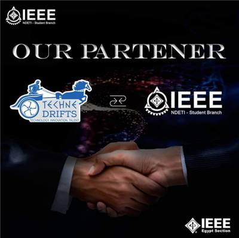
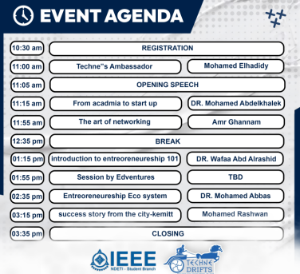
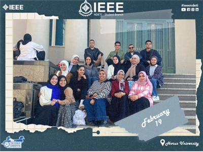
" المحاضرة الأولى للمهندس وليد الصافوري والمهندس أحمد توفيق مع الفرع الطلابي للـ IEEE بالمعهد "
المهندس وليد الصافوري ، خريج هندسة الاتصالات جامعة المنوفية، ويشغل العديد من المناصب من أهمها: رئيس قسم الاتصالات اللاسلكية في شركة Netova ، محاضر متميز في معهد تكنولوجيا المعلومات المصري (ITI) ، ويقدم العديد من الدورات على منصات تعليمية مثل Udemy بخبرة ١٨ سنة في عالم هندسة الشبكات. المهندس / أحمد توفيق ، خبره تزيد عن ٢٠ سنه من العمل والتدريب في مجال هندسه الشبكات والتكنولوجيا وتقديم كورسات CCNA CCNP التي ساعدت كثير من المهندسين في سوق العمل. بالإضافة لمنصاته التعليمية التي يسعي فيها المهندس أحمد توفيق لنشر الوعي بأهمية مجال الشبكات وتقديم الدعم والارشاد للمهندسين والطلاب المهتمين بالمجال. المحاضرة بعنوان كيفية الإستعداد لسوق العمل وتصبح مهندس شبكات ناجح (How to prepare for the job market and Become a successful network enginee).
محاور المحاضرة:-
- مسارات شركات الاتصالات.
- احتياجات السوق.
- كيفية تحضير نفسك لبدء مسار حياتك المهنية.
- ما هو مجال الشبكات وتكنولوجيا المعلومات ؟
- كيف ابدأ في مجال تكنولوجيا المعلومات ؟
- ماهي التخصصات المطلوبة في سوق العمل ؟
- ما هو الطريق لاحتراف المجال وضمان الحصول على وظيفه جيده بعد التخرج؟
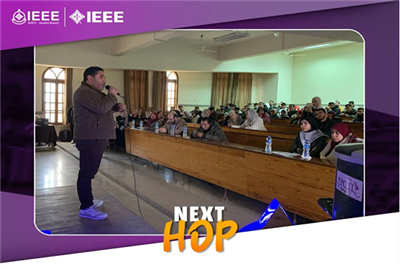
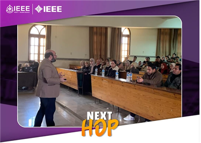
“My Path | طريقي“ – A Self-Development & Mental Talk
يسعد فرع IEEE بالمعهد العالي للهندسة والتكنولوجيا بدمياط الجديدة دعوتكم لحضور محاضرة مميزة بعنوان: "طريقي" – رحلة نحو الذات والتوازن النفسي
محاور المحاضرة:-
- تحديد المسار المهني بعد التخرج
- اكتشاف الذات واختيار التخصص المناسب
- بناء الثقة بالنفس والتوعية بمتلازمة المحتال Impostor Syndrome
المحاضرة مقدمة من:-
- روضة أحمد صلاح - معالج نفسي شعوري ، ولايف كوتش Life Coach - باحثة ماجستير بالصحة النفسية – جامعة بورسعيد - مدرب معتمد من الأكاديمية العربية للتنمية -صاحبة خبرة في تقديم الجلسات النفسية منذ 2020
مميزات الحضور :-
- فعالية تفاعلية تشمل أنشطة وتمارين نفسية
- اكتساب مهارات في التطوير الذاتي والثقة بالنفس
- مساحة حوار مفتوحة مع مختصة في المجال النفسي
- متفوتش الفرصة – خلي "طريقك" أوضح وذهنك أصفى!